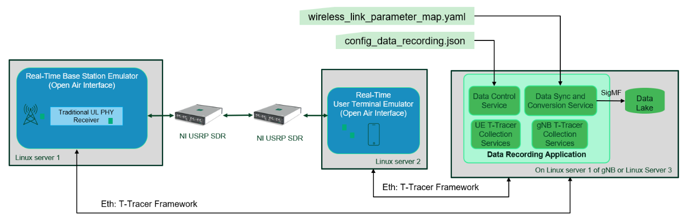
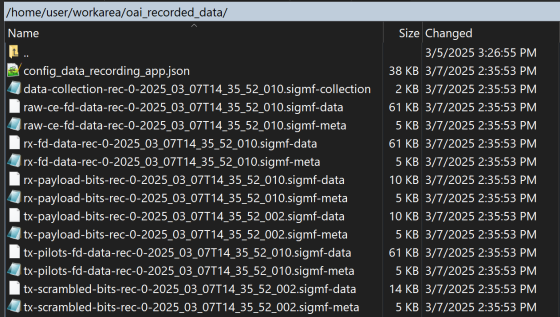
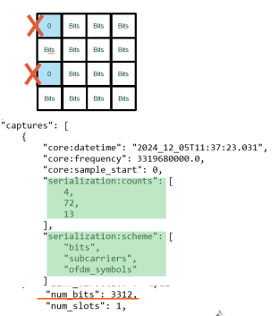

Synchronized Real-Time Data Recording Application¶
The Data Recording Application runs in parallel to the system components on one of the LINUX servers. It makes use of OAI T-tracer framework. It is able to communicate with the Base station (gNB) and User terminal (UE). In addition, it synchronizes and combines data traces and control information (metadata) from Base station and User terminal into consistent Signal Metadata Format (SigMF) format data sets. SigMF is an open-source standard that specifies a way to describe sets of recorded digital signal samples with metadata (data properties and scenario descriptions) provided in JSON files. These recorded data sets have a wide range of uses in research and applications.
Data Recording Application Architecture¶
Data Recording Application designed to have multiple services in different simulation environments:
- Data Control Service (Python)
- Data collection (T-Tracer) Service (C)
- Data Conversion Service (Python)
Regarding to the APIs between different services, they are such as the following:
- Data Control Service -> Data Collection (T–Tracer) Service: The API is based on a shared memory.
- Data Collection (T–Tracer) Service -> 5G NR Stack: T-Tracer Framework, ethernet connection.
- Data Collection (T–Tracer) Service -> Data Conversion Service: The API is based on a shared memory.
The following figure shows OAI gNB and UE with the Data Recording App system architecture.

Required Packages¶
Install all required system packages with the following commands:
sudo apt-get update
sudo apt-get install -y python3-sysv-ipc libxft-dev
Then, install all required python packages with the following commands:
python3 -m pip install sigmf==1.2.1 termcolor bitarray pandas numpy==1.23
User can install all required python packages also using the requirements.txt file:
python3 -m pip install -r common/utils/data_recording/requirements.txt
Configuration Files¶
Main Data Recording JSON Configuration File¶
The Data Recording application provides configuration file in JSON format. It is stored in common/utils/data_recording/config/config_data_recording.json folder. The main parameters are:
- data_storage_path: Path to directory for data storage
- num_records: Number of requested data records in slots. The maximum number of num_records depends on the memory size. If the user would like to record large number of records, user needs to increase the memory size defined here (common/utils/T/tracer/shared_memory_config.h)
- t_tracer_message_definition_file: T-Tracer message definition file
- parameter_map_file: Parameter mapping dictionary (OAI parameters to standardized metadata). It is located here: common/utils/data_recording/config/wireless_link_parameter_map.yaml
- start_frame_number: It can be used to start the recording from a specific frame, but it is not yet supported.
- common_meta_data: Common metadata parameters that are not read from the system yet, but shall be included into the SigMF metadata such as the sampling rate, the bandwidth, and the clock reference of USRP.
- base_station:
- requested_tracer_messages: Requested base station data traces. The supported messages are: - GNB_PHY_UL_FD_PUSCH_IQ - GNB_PHY_UL_FD_DMRS - GNB_PHY_UL_FD_CHAN_EST_DMRS_POS - GNB_PHY_UL_FD_CHAN_EST_DMRS_INTERPL - GNB_PHY_UL_PAYLOAD_RX_BITS - tracer_service_baseStation_address: The IP address and port number of base station server. If the Data Recording App and the Data Collection (T–Tracer) Service are running on the same server of base station, the IP address and port number are :
127.0.0.1:2021- meta_data: Additional base station metadata (additional fixed base station parameters that cannot be read from the system yet, but shall be included into the SigMF metadata) - shared_mem_config: Shared Memory configuration such as in T-Tracer App of gNB
- user_equipment
- requested_tracer_messages: Requested user equipment data traces. The supported messages are: - UE_PHY_UL_SCRAMBLED_TX_BITS - UE_PHY_UL_PAYLOAD_TX_BITS - tracer_service_userEquipment_address**: The IP address and port number of UE server. - meta_data: Additional user equipment metadata (additional fixed UE parameters that are not read from the system yet, but shall be included into the SigMF metadata) - shared_mem_config: Shared Memory configuration such as in T-Tracer App of UE
Notes:
- The data can be recorded from base station and UE or from base station only or UE only. To disable the recording from any station, make the list of requested_tracer_messages empty such as: requested_tracer_messages:[]
The figure below illustrates an example of a JSON Data Recording App configuration file.
"data_recording_config": {
"data_storage_path": "/home/user/workarea/oai_recorded_data/",
"data_file_format": "SigMF",
"enable_saving_tracer_messages_sigmf": true,
"num_records": 5,
"t_tracer_message_definition_file": "../T/T_messages.txt",
"parameter_map_file": "config/wireless_link_parameter_map.yaml",
"start_frame_number": 5,
"common_meta_data": {
"sample_rate": 61440000.0,
"bandwidth": 40000000.0,
"clock_reference": "external"
},
"nodes": [
{
"id": "gnb_0",
"type": "gnb",
"requested_tracer_messages": [
"GNB_PHY_UL_FD_PUSCH_IQ",
"GNB_PHY_UL_FD_DMRS",
"GNB_PHY_UL_FD_CHAN_EST_DMRS_POS",
"GNB_PHY_UL_FD_CHAN_EST_DMRS_INTERPL",
"GNB_PHY_UL_PAYLOAD_RX_BITS"],
"tracer_service_address": "127.0.0.1:2021",
"meta_data": {
"num_tx_antennas": 1,
"num_rx_antennas": 1,
"tx_gain": 48.0,
"rx_gain": 30.0,
"hw_type": "USRP X410",
"hw_subtype": "ZBX",
"seid": "328AB35"
},
"shared_mem_config": {
"read_path": "/tmp/gnb_app1",
"write_path": "/tmp/gnb_app2",
"project_id": 2335
}
},
{
"id": "ue_0",
"type": "ue",
"requested_tracer_messages": [
"UE_PHY_UL_SCRAMBLED_TX_BITS",
"UE_PHY_UL_PAYLOAD_TX_BITS"],
"tracer_service_address": "127.0.0.1:2023",
"meta_data": {
"num_tx_antennas": 1,
"num_rx_antennas": 1,
"tx_gain": 48.0,
"rx_gain": 30.0,
"hw_type": "USRP X410",
"hw_subtype": "ZBX",
"seid": "323F75F"
},
"shared_mem_config": {
"read_path": "/tmp/ue_app1",
"write_path": "/tmp/ue_app2",
"project_id": 2336
}
}
]
}
Wireless Link Parameter Map Dictionary¶
Since every signal recorder has related configuration with different naming scheme, the common/utils/data_recording/config/wireless_link_parameter_map.yaml is a dictionary to do the parameters pair between the signal configuration and the SigMF metadata (e.g. OAI parameter name vs. SigMF metadata parameter name). It eases of adoption in case of adding new parameters. In case of changing the name of given parameters in OAI and we need to get those parameters in metadata, the required changes need to be done in the parameter map dictionary.
The following figure shows an example of Wireless Link Parameter Map Dictionary. For example, the frequency range is called in standardized SigMF metadata frequency_range while it is called in OAI freq_range and it is called in NI 5G NR RFmx frequency range.
# Frequency Range
- sigmf_parameter_name: "frequency_range"
description: "Frequency Range"
5gnr_ni_rfmx_rfws_parameter:
name: "Frequency Range"
value_map: # simu value : SigMF value
"Range 1": "fr1"
"Range 2": "fr2"
5gnr_oai_parameter:
name: "freq_range"
value_map: # simu value : SigMF value
0: "fr1"
1: "fr2"
Global Metadata¶
There are some metadata parameters that the user may need to change only once. Those parameters have been hard coded in the Data Recording App header. common/utils/data_recording/data_recording_app_v1.1.py. Those are:
- The global metadata such as: author, description, sigmf collection file prefix, datetime_offset, enable saving config Data Recording App in json file with recorded data, and name of signal generator (i.e. 5gnr_oai). The name of signal generator is used for parameter mapping dictionary (OAI parameters to standardized metadata).
- The mapping between supported OAI messages and file_name_prefix, scope, and description.
The following figure shows an example of global metadata.
# globally applicable metadata
global_info = {
"author": "Abdo Gaber",
"description": "Synchronized Real-Time Data Recording",
"timestamp": 0,
"collection_file_prefix": "data-collection", # collection file name prefix "deap-rx + str(...)"
"collection_file": "", # Reserved to be created in the code: “data-collection_rec-0_TIME-STAMP”
"datetime_offset": "", # datetime offset between current location and UTC/Zulu timezone
# Example: "+01:00" for Berlin, Germany
"save_config_data_recording_app_json": True,
"waveform_generator": "5gnr_oai",
"extensions": {},
}
The following figure shows an example of mapping between supported OAI messages by Data recorrding App and file_name_prefix.
supported_oai_tracer_messages = {
# gNB messages
"GNB_PHY_UL_FD_PUSCH_IQ": {
"file_name_prefix": "rx-fd-data",
"scope": "gNB",
"description": "Frequency-domain RX data",
"serialization_scheme": ["subcarriers", "ofdm_symbols"],
},
"GNB_PHY_UL_FD_DMRS": {
"file_name_prefix": "tx-pilots-fd-data",
"scope": "gNB",
"description": "Frequency-domain TX PUSCH DMRS data",
"serialization_scheme": ["subcarriers", "ofdm_symbols"],
},
"GNB_PHY_UL_FD_CHAN_EST_DMRS_POS": {
"file_name_prefix": "raw-ce-fd-data",
"scope": "gNB",
"description": "Frequency-domain raw channel estimates (at DMRS positions)",
"serialization_scheme": ["subcarriers", "ofdm_symbols"],
},
"GNB_PHY_UL_FD_CHAN_EST_DMRS_INTERPL": {
"file_name_prefix": "raw-inter-ce-fd-data",
"scope": "gNB",
"description": "Interpolcated Frequency-domain raw channel estimates",
"serialization_scheme": ["subcarriers", "ofdm_symbols"],
},
"GNB_PHY_UL_PAYLOAD_RX_BITS": {
"file_name_prefix": "rx-payload-bits",
"scope": "gNB",
"description": "Received PUSCH payload bits",
"serialization_scheme": ["bits", "subcarriers", "ofdm_symbols"],
},
# UE messages
"UE_PHY_UL_SCRAMBLED_TX_BITS": {
"file_name_prefix": "tx-scrambled-bits",
"scope": "UE",
"description": "Transmitted scrambled PUSCH bits",
"serialization_scheme": ["bits", "subcarriers", "ofdm_symbols"],
},
"UE_PHY_UL_PAYLOAD_TX_BITS": {
"file_name_prefix": "tx-payload-bits",
"scope": "UE",
"description": "Transmitted PUSCH payload bits",
"serialization_scheme": ["bits", "subcarriers", "ofdm_symbols"],
},
}
How to run Data Recording Application¶
The data recording application can be hosted on the gNB Server or in another server (for example the data lake server). The T-Tracer framework is a Network socket-based (TCP) communication between OAI 5G RAN stack and external tracer program.
Step1: Run NR gNB Softmodem with enabling T-Tracer Option¶
It is worth mentioning that there is no need to set the T-Tracer port number via NR gNB Softmodem command, the default port 2021 is going to be used. If the Data Recording App is running on the same server of gNB, the parameter tracer_service_baseStation_address should be "tracer_service_baseStation_address": "127.0.0.1:2021. The gNB T-tracer App will read captured data then from port 2021.
For the test simplicity, user can run the system in PHY-test mode. We will show how to run using PHY-Test mode:
Run NR gNB Softmodem with USRP:
sudo ./cmake_targets/ran_build/build/nr-softmodem -O ./targets/PROJECTS/GENERIC-NR-5GC/CONF/gnb0.prs.band78.fr1.106PRB.usrpx310 --gNBs.[0].min_rxtxtime 6 --usrp-tx-thread-config 1 --phy-test -d --T_stdout 2 --T_nowait
sudo ./cmake_targets/ran_build/build/nr-softmodem -O ./targets/PROJECTS/GENERIC-NR-5GC/CONF/gnb0.prs.band78.fr1.106PRB.usrpx310.conf --gNBs.[0].min_rxtxtime 6 --rfsim --phy-test --rfsimulator.[0].serveraddr server --T_stdout 2 --T_nowait
Note: User needs to change the name of gNB config file to your gNB config file.
It is worth mentioning that the possible values for T-tracer control options
- --T_stdout option: default 1 - --T_stdout = 0: Disable output on the terminal and only use the T tracer - --T_stdout = 1: Disable the T tracer and only output on the terminal - --T_stdout = 2: Both Eeable the T tracer and output on the terminal
- --T_nowait: Starting gNB without waiting for T-Tracer to be connected
- --T_port [port]: Default port 2021
Step2: Run NR UE Softmodem with enabling T-Tracer Option¶
User needs to set the T-Tracer port number via NR UE Softmodem command, assume 2023. The UE T-tracer App will read captured data then from port 2023. The IP address and port number are configured in JSON file via the parameter: "tracer_service_userEquipment_address": "192.168.100.3:2023”, where the IP address 192.168.100.3 is the IP address of the UE server.
In OAI PHY-test mode, after running the NR gNB softmodem, copy from gNB Server the following two RRC files reconfig.raw and rbconfig.raw to UE Server (assume to /home/user/workarea/rrc_files/):
Run OAI Soft UE with USRP:
sudo ./cmake_targets/ran_build/build/nr-uesoftmodem --usrp-args "type=x4xx,addr=192.168.10.2,second_addr=192.168.11.2,clock_source=external,time_source=external" --phy-test -O ./targets/PROJECTS/GENERIC-NR-5GC/CONF/ue.conf --reconfig-file /home/user/workarea/rrc_files/reconfig.raw --rbconfig-file /home/user/workarea/rrc_files/rbconfig.raw --ue-rxgain 40 --ue-txgain 12 --T_stdout 2 --T_nowait --T_port 2023
Run OAI Soft UE in RF Simulation, assume both gNB and UE are running on the same server in Simulation mode`:
sudo ./cmake_targets/ran_build/build/nr-uesoftmodem --rfsim --phy-test -O ./targets/PROJECTS/GENERIC-NR-5GC/CONF/ue.conf --reconfig-file /home/user/workarea/openairinterface5g/reconfig.raw --rbconfig-file /home/user/workarea/openairinterface5g/rbconfig.raw --T_stdout 2 --T_nowait --T_port 2023
Step3: Run Data Recording Application Services¶
First, compile the Data Collection (T-Tracer) Services:
- Go to:
common/utils/T/tracer - Compile gNB and UE Data Collection Services (T-Tracer Apps)
make t_tracer_app_gnb make t_tracer_app_ue
Run gNB Data Collection service on one terminal:
./t_tracer_app_gnb -d ../T_messages.txt
./t_tracer_app_ue -d ../T_messages.txt -p 2023
Second, run main Data Recording Application:
- Go to: common/utils/data_recording
Run the following python script:
python3 data_recording_app_v1.1.py
The recorded data set will be stored in the configured path, assume /home/user/workarea/oai_recorded_data/.
The following figure shows an example of recorded data set.

Overview on Collected Data Set¶
SigMF supports heterogeneous data via SigMF collections. It is used to bundle multiple SigMF files into one recording. A heterogeneous data set generated for a certain scenario is stored in a SigMF collection which consists of (as it is shown in the figure above) - One SigMF collection file per each record, e.g. - data-collection-rec-idx-timestamp.sigmf-collection - SigMF recordings (.sigmf-meta file + .sigmf-data file). Per each message, there are two files: - rx-fd-data-rec-idx-timestamp.sigmf-meta - rx-fd-data-rec-idx-timestamp.sigmf-data - tx-pilots-fd-data-rec-idx-timestamp.sigmf-meta - tx-pilots-fd-data-rec-idx-timestamp.sigmf-data - raw-ce-fd-data-rec-idx-timestamp.sigmf-meta - raw-ce-fd-data-rec-idx-timestamp.sigmf-data - tx-scrambled-bits-rec-idx-timestamp.sigmf-meta - tx-scrambled-bits-rec-idx-timestamp.sigmf-data
The following figure shows an example of SigMF collection file and how it bundles multiple SigMF files of a single record.
{
"collection": {
"core:author": "Abdo Gaber",
"core:description": "Synchronized Real-Time Data Recording",
"core:streams": [
{
"hash": "0a39edb03eb86fb0d368a0511f17b0e99d3314d09b1d271c8bc893dffbb6b06b8987362bd15a334f8da40091ca83f6201218084fc602b562b5b012933bc4608a",
"name": "/home/user/workarea/oai_recorded_data/tx-pilots-fd-data-rec-0-2025_06_19T11_19_00_037"
},
{
"hash": "f2062ff3a7020e2569c9d1d3c5a8403dacf83a1e842b126f889262d56a1b2efc818962d198cd5219bf563aba5e0709e80eba40bd973de95787319e8380d339ba",
"name": "/home/user/workarea/oai_recorded_data/raw-ce-fd-data-rec-0-2025_06_19T11_19_00_037"
},
{
"hash": "283b62908321db17db6a53c77d41a385360e9f11128627934f4f41746b797b77e41dbc18e72d096126673766edb5d4a9408712f5071d064fae0a792644c16bdd",
"name": "/home/user/workarea/oai_recorded_data/rx-fd-data-rec-0-2025_06_19T11_19_00_037"
},
{
"hash": "e72f2d6ea3e353d666e7635726ea6a5bd096e6fc14c965c7c2803705bcd0cf934ac9dc3a0c12f190171afc2db7d4b3fd7d5acc8e18796c48d5ee6e7bbd0551b7",
"name": "/home/user/workarea/oai_recorded_data/raw-inter-ce-fd-data-rec-0-2025_06_19T11_19_00_037"
},
{
"hash": "7eddf8eb4564c03a1505e3288052cc583416617158dbff0bad942af7cc2477449c6c7ff2f02a55849449ba6956800b446f5c0880d418d80fffc24fb236038ef3",
"name": "/home/user/workarea/oai_recorded_data/rx-payload-bits-rec-0-2025_06_19T11_19_00_037"
},
{
"hash": "ec128fd8691975995df84f96db3740b773cb060d9803f1ae2664e0d081011e59d623f7fe909552e807a4e63cb02e7f9005e8a19ab2a680004d8af9f6b49fff06",
"name": "/home/user/workarea/oai_recorded_data/tx-payload-bits-rec-0-2025_06_19T11_19_00_029"
},
{
"hash": "d8300b206ede81639c0d8f25030d85ff3b4e848456a7d73c706350fbc2b4ce7b114cddf29173e069335fcf4aeab37818129259afacf0fd02efa34b9b6d985edb",
"name": "/home/user/workarea/oai_recorded_data/tx-scrambled-bits-rec-0-2025_06_19T11_19_00_029"
}
],
"core:version": "1.2.1"
}
}
Each SigMF metadata has three sections:
- global: The standardized global parameters are presented here to understand and read the binary data.
- captures: The standardized capture parameters provide details about the capture process.
- annotations: It provides details about the recording scenario.
The following figure shows an example of SigMF metadata file, for example for the frequency-domain RX data.
{
"global": {
"core:author": "Abdo Gaber",
"core:collection": "data-collection-rec-1-2026_04_21T14_14_07_008277523",
"core:dataset": "raw-ce-fd-data-rec-1-2026_04_21T14_14_07_008279596.sigmf-data",
"core:datatype": "cf32_le",
"core:description": "Frequency-domain raw channel estimates (at DMRS positions)",
"core:hw": "USRP X410",
"core:license": "MIT License",
"core:num_channels": 1,
"core:recorder": "NI Data Recording Application for OAI",
"core:sample_rate": 61440000.0,
"core:sha512": "fce1c6e85e986939e8cf5a3937d0d2f08d9f27ab52ea4065d6e347beb5acf7017a4f9d200c70345f1724ff52d886403e2fddedce62c5c1de4ef895a941547e3d",
"core:version": "1.2.1"
},
"captures": [
{
"core:datetime": "2026_04_21T14:14:07.008279596",
"core:frequency": 3319680000.0,
"core:sample_start": 0,
"serialization:counts": [
600,
13
],
"serialization:scheme": [
"subcarriers",
"ofdm_symbols"
]
}
],
"annotations": [
{
"core:sample_count": 7800,
"core:sample_start": 0,
"num_transmitters": 1,
"system_components:channel": [
{
"carrier_frequency": 3319680000.0,
"channel_model": "tdl_d",
"delay_spread": 5.0000000000000004e-08,
"emulation_mode": "ni rf real time",
"snr_esn0_db": 20.0,
"speed": 5.0,
"transmitter_id": "tx_0"
}
],
"system_components:receiver": {
"bandwidth": 40000000.0,
"clock_reference": "external",
"gain": 30.0,
"hw_subtype": "ZBX",
"manufacturer": "NI",
"num_rx_antennas": 1,
"phy_freq_domain_receiver_type": "trad_rx",
"seid": "328AB35"
},
"system_components:transmitter": [
{
"signal:detail": {
"5gnr": {
"cell_id": 0,
"cp_mode": "normal",
"frame": 916,
"frame_structure": "tdd",
"frequency_range": "fr1",
"link_direction": "uplink",
"num_rx_antennas": 1,
"num_slots": 1,
"num_tx_antennas": 1,
"pusch:content": "compliant",
"pusch:mapping_type": "B",
"pusch:mcs": 9,
"pusch:mcs_table_index": 0,
"pusch:modulation": "qpsk",
"pusch:num_layer": 1,
"pusch:num_ofdm_symbols": 13,
"pusch:num_prb": 50,
"pusch:payload_bit_pattern": "random",
"pusch:start_ofdm_symbol": 0,
"pusch:start_prb": 0,
"pusch:transform_precoding": "disabled",
"pusch_dmrs:antennna_port": 0,
"pusch_dmrs:duration_num_ofdm_symbols": 1,
"pusch_dmrs:num_add_positions": 2,
"pusch_dmrs:ofdm_symbol_idx": [
0,
5,
10
],
"pusch_dmrs:resource_map_config": "5g nr type 1",
"pusch_dmrs:start_ofdm_symbol": 0,
"rnti": 4660,
"slot": 8,
"subcarrier_spacing": 30000
},
"generator": "OpenAirInterface: https://www.openairinterface.org/",
"standard": "5gnr"
},
"signal:emitter": {
"bandwidth": 40000000.0,
"clock_reference": "external",
"frequency": 3319680000.0,
"gain_tx": 48.0,
"hw": "USRP X410",
"hw_subtype": "ZBX",
"manufacturer": "NI",
"sample_rate": 61440000.0,
"seid": "323F75F"
},
"transmitter_id": "tx_0"
}
]
}
]
}
Synchronization Validation¶
For synchronization validation and to show how to read SigMF metadata, a simple script common/utils/data_recording/sync_validation_demo.py has been created to validate that, for example: the recorded bits from gNB and UE are in sync.
Data Recording Application Limitation¶
- MIMO Support: The data recording app is ready, tested and validated for SISO. For MIMO, it should be enhanced, tested, and validated.
- It supports the uplink gNB and UE messages listed above. If the user would like to record another message for example from DL, the user needs to define the required meta-data. User can use the existing meta-data definition of UL as a template. Then, add those messages to the headers of different Data Recording App services.
- Data serialization in Tx scrambled bits message without considering location of DMRS symbols: Only captured valid data bits is stored. It means the location of DMRS symbols are not considered and filled with zeros and stored as it is in the grid presented on the figure below. For example: - Number of bits per IQ Symbol = 4 - Number of subcarrier = 72 - Number of OFDM symbols = 13 - So, the valid number of bits in the transport block (slot) is: 3312 bits. If we will fill DMRS locations by zeros, the number of bits is: 3744 bits, but it is not done due to the real-timing issues. For Tx scrambled bits data de-serialization, the user can reconstruct the Tx Scrambled Bits Grid (2D Grid) by using the captured DMRS grid or Channel Estimates Grid as a reference and no need to derive the DMRS symbols locations based on 5G NR config parameters.

To Do List:¶
- Provide an overview about the different services of the Data Recording App (Data Control Service, Data collection (T-Tracer) Service, Data Conversion Service) and the APIs definition between them.